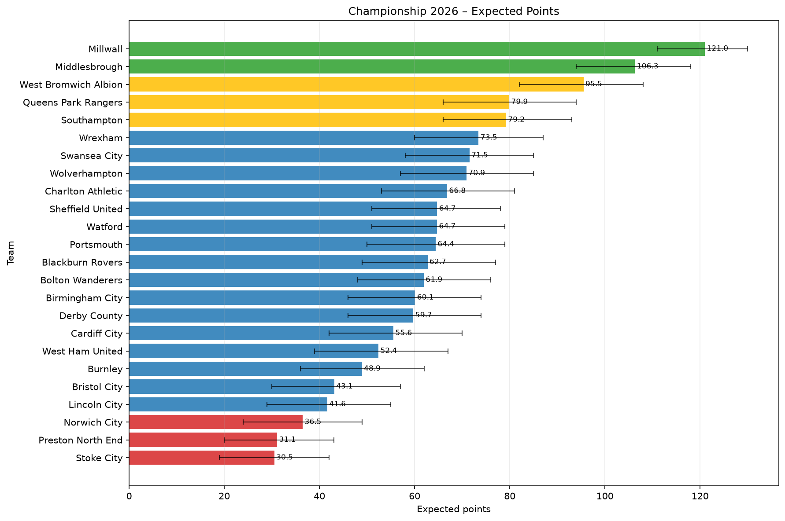

Promotion: posiciones 1–2 | Playoffs: posiciones 3–6 | Relegation: últimas 3

Las probabilidades se calculan agrupando los resultados de todas las simulaciones Monte Carlo.
| season | matchday | home_team | away_team | prob_home_win | prob_draw | prob_away_win | predicted_result | mean_home_goals | mean_away_goals |
|---|---|---|---|---|---|---|---|---|---|
| 2026 | 1 | Bolton Wanderers | Preston North End | 64.6% | 20.0% | 15.3% | H | 2.01 | 0.86 |
| 2026 | 1 | Bristol City | Millwall | 1.9% | 5.5% | 92.6% | A | 0.52 | 3.92 |
| 2026 | 1 | Burnley | West Ham United | 40.1% | 19.8% | 40.1% | H | 2.11 | 2.10 |
| 2026 | 1 | Cardiff City | Wrexham | 27.4% | 23.5% | 49.1% | A | 1.22 | 1.73 |
| 2026 | 1 | Charlton Athletic | Derby County | 47.3% | 22.6% | 30.1% | H | 1.94 | 1.52 |
| 2026 | 1 | Middlesbrough | Lincoln City | 90.7% | 6.0% | 3.3% | H | 4.37 | 0.94 |
| 2026 | 1 | Norwich City | West Bromwich Albion | 6.6% | 9.2% | 84.2% | A | 1.02 | 3.62 |
| 2026 | 1 | Portsmouth | Queens Park Rangers | 27.6% | 21.5% | 50.9% | A | 1.47 | 2.03 |
| 2026 | 1 | Sheffield United | Birmingham City | 36.1% | 38.5% | 25.4% | D | 0.76 | 0.59 |
| 2026 | 1 | Stoke City | Swansea City | 13.4% | 24.0% | 62.5% | A | 0.63 | 1.68 |
| 2026 | 1 | Watford | Southampton | 33.1% | 20.4% | 46.5% | A | 1.76 | 2.09 |
| 2026 | 1 | Wolverhampton | Blackburn Rovers | 47.3% | 21.7% | 31.0% | H | 1.85 | 1.46 |
| 2026 | 2 | Birmingham City | Bristol City | 51.3% | 25.0% | 23.7% | H | 1.59 | 0.99 |
| 2026 | 2 | Blackburn Rovers | Middlesbrough | 12.5% | 15.4% | 72.1% | A | 1.16 | 2.85 |
| 2026 | 2 | Derby County | Cardiff City | 45.6% | 20.8% | 33.6% | H | 1.97 | 1.67 |
| 2026 | 2 | Lincoln City | Portsmouth | 25.0% | 17.4% | 57.6% | A | 1.81 | 2.73 |
| 2026 | 2 | Millwall | Norwich City | 96.7% | 2.5% | 0.9% | H | 4.98 | 0.52 |
| 2026 | 2 | Preston North End | Wolverhampton | 13.6% | 16.7% | 69.7% | A | 1.08 | 2.62 |
| 2026 | 2 | Queens Park Rangers | Bolton Wanderers | 50.8% | 26.4% | 22.8% | H | 1.45 | 0.87 |
| 2026 | 2 | Southampton | Stoke City | 82.2% | 10.5% | 7.3% | H | 3.60 | 1.10 |
| 2026 | 2 | Swansea City | Sheffield United | 32.3% | 42.1% | 25.5% | D | 0.66 | 0.55 |
| 2026 | 2 | West Bromwich Albion | Burnley | 80.1% | 11.8% | 8.1% | H | 3.25 | 1.03 |
| 2026 | 2 | West Ham United | Charlton Athletic | 30.2% | 20.6% | 49.1% | A | 1.67 | 2.16 |
| 2026 | 2 | Wrexham | Watford | 45.4% | 26.5% | 28.1% | H | 1.48 | 1.10 |
| 2026 | 3 | Blackburn Rovers | Queens Park Rangers | 27.3% | 24.3% | 48.4% | A | 1.17 | 1.65 |
| 2026 | 3 | Bolton Wanderers | Lincoln City | 55.8% | 22.4% | 21.8% | H | 1.89 | 1.09 |
| 2026 | 3 | Bristol City | Portsmouth | 26.0% | 18.6% | 55.4% | A | 1.68 | 2.48 |
| 2026 | 3 | Cardiff City | Sheffield United | 28.6% | 32.4% | 39.0% | A | 0.82 | 1.01 |
| 2026 | 3 | Charlton Athletic | Preston North End | 70.9% | 16.3% | 12.8% | H | 2.59 | 1.02 |
| 2026 | 3 | Derby County | Swansea City | 27.9% | 27.4% | 44.7% | A | 1.03 | 1.37 |
| 2026 | 3 | Middlesbrough | West Bromwich Albion | 51.5% | 20.7% | 27.9% | H | 2.23 | 1.61 |
| 2026 | 3 | Norwich City | Burnley | 31.9% | 19.6% | 48.5% | A | 1.87 | 2.31 |
| 2026 | 3 | Southampton | Millwall | 6.6% | 10.2% | 83.2% | A | 1.00 | 3.46 |
| 2026 | 3 | Watford | West Ham United | 51.4% | 21.2% | 27.4% | H | 2.06 | 1.46 |
| 2026 | 3 | Wolverhampton | Stoke City | 74.6% | 15.2% | 10.2% | H | 2.67 | 0.91 |
| 2026 | 3 | Wrexham | Birmingham City | 45.4% | 29.3% | 25.3% | H | 1.29 | 0.89 |
| 2026 | 4 | Birmingham City | Southampton | 29.7% | 22.6% | 47.7% | A | 1.42 | 1.85 |
| 2026 | 4 | Burnley | Middlesbrough | 6.6% | 9.4% | 84.0% | A | 1.11 | 3.73 |
| 2026 | 4 | Lincoln City | Blackburn Rovers | 25.7% | 20.3% | 54.0% | A | 1.43 | 2.15 |
| 2026 | 4 | Millwall | Wrexham | 78.8% | 14.2% | 7.0% | H | 2.52 | 0.60 |
| 2026 | 4 | Portsmouth | Derby County | 47.2% | 20.3% | 32.5% | H | 2.35 | 1.97 |
| 2026 | 4 | Preston North End | Bristol City | 30.7% | 22.1% | 47.2% | A | 1.51 | 1.90 |
| 2026 | 4 | Queens Park Rangers | Cardiff City | 59.1% | 22.2% | 18.7% | H | 1.99 | 1.04 |
| 2026 | 4 | Sheffield United | Bolton Wanderers | 35.3% | 37.9% | 26.8% | D | 0.77 | 0.64 |
| 2026 | 4 | Stoke City | Norwich City | 33.9% | 21.9% | 44.2% | A | 1.63 | 1.88 |
| 2026 | 4 | Swansea City | Watford | 42.4% | 29.3% | 28.4% | H | 1.16 | 0.87 |
| 2026 | 4 | West Bromwich Albion | Charlton Athletic | 64.7% | 18.6% | 16.7% | H | 2.37 | 1.15 |
| 2026 | 4 | West Ham United | Wolverhampton | 27.9% | 19.7% | 52.4% | A | 1.65 | 2.31 |
| 2026 | 5 | Birmingham City | Wolverhampton | 32.5% | 26.9% | 40.6% | A | 1.19 | 1.36 |
| 2026 | 5 | Burnley | Bristol City | 47.3% | 21.0% | 31.7% | H | 2.05 | 1.64 |
| 2026 | 5 | Lincoln City | Southampton | 15.8% | 14.3% | 69.9% | A | 1.63 | 3.31 |
| 2026 | 5 | Millwall | Bolton Wanderers | 83.7% | 11.2% | 5.1% | H | 2.68 | 0.49 |
| 2026 | 5 | Portsmouth | Cardiff City | 49.8% | 20.1% | 30.1% | H | 2.35 | 1.82 |
| 2026 | 5 | Preston North End | Blackburn Rovers | 17.7% | 19.1% | 63.2% | A | 1.15 | 2.28 |
| 2026 | 5 | Queens Park Rangers | Middlesbrough | 23.1% | 21.5% | 55.4% | A | 1.27 | 2.03 |
| 2026 | 5 | Sheffield United | Norwich City | 56.6% | 26.0% | 17.4% | H | 1.49 | 0.69 |
| 2026 | 5 | Stoke City | Charlton Athletic | 15.7% | 19.2% | 65.2% | A | 1.00 | 2.23 |
| 2026 | 5 | Swansea City | Wrexham | 36.9% | 31.0% | 32.1% | H | 1.02 | 0.92 |
| 2026 | 5 | West Bromwich Albion | Watford | 64.4% | 19.1% | 16.5% | H | 2.21 | 1.02 |
| 2026 | 5 | West Ham United | Derby County | 36.6% | 20.8% | 42.5% | A | 1.97 | 2.13 |
| 2026 | 6 | Blackburn Rovers | Sheffield United | 32.3% | 33.1% | 34.6% | A | 0.87 | 0.90 |
| 2026 | 6 | Bolton Wanderers | West Ham United | 49.1% | 22.5% | 28.4% | H | 1.81 | 1.33 |
| 2026 | 6 | Bristol City | Lincoln City | 42.8% | 21.3% | 35.9% | H | 1.89 | 1.72 |
| 2026 | 6 | Cardiff City | Stoke City | 63.9% | 19.0% | 17.1% | H | 2.26 | 1.10 |
| 2026 | 6 | Charlton Athletic | Queens Park Rangers | 29.4% | 24.9% | 45.7% | A | 1.22 | 1.57 |
| 2026 | 6 | Derby County | West Bromwich Albion | 16.6% | 16.4% | 67.0% | A | 1.25 | 2.60 |
| 2026 | 6 | Middlesbrough | Millwall | 21.7% | 20.2% | 58.1% | A | 1.22 | 2.11 |
| 2026 | 6 | Norwich City | Birmingham City | 23.7% | 23.5% | 52.8% | A | 1.12 | 1.80 |
| 2026 | 6 | Southampton | Swansea City | 41.4% | 25.4% | 33.2% | H | 1.53 | 1.36 |
| 2026 | 6 | Watford | Preston North End | 67.7% | 18.4% | 14.0% | H | 2.33 | 0.96 |
| 2026 | 6 | Wolverhampton | Portsmouth | 49.3% | 20.0% | 30.7% | H | 2.32 | 1.82 |
| 2026 | 6 | Wrexham | Burnley | 61.3% | 19.6% | 19.1% | H | 2.17 | 1.12 |
| 2026 | 7 | Blackburn Rovers | Millwall | 4.9% | 10.5% | 84.5% | A | 0.65 | 3.03 |
| 2026 | 7 | Bolton Wanderers | Cardiff City | 44.9% | 25.5% | 29.5% | H | 1.53 | 1.20 |
| 2026 | 7 | Charlton Athletic | Portsmouth | 44.6% | 21.2% | 34.2% | H | 2.12 | 1.85 |
| 2026 | 7 | Derby County | Birmingham City | 38.7% | 26.1% | 35.1% | H | 1.35 | 1.29 |
| 2026 | 7 | Middlesbrough | Norwich City | 93.2% | 4.4% | 2.4% | H | 4.82 | 0.94 |
| 2026 | 7 | Preston North End | Lincoln City | 31.4% | 20.9% | 47.7% | A | 1.59 | 1.99 |
| 2026 | 7 | Sheffield United | Wolverhampton | 34.2% | 32.8% | 33.0% | H | 0.91 | 0.89 |
| 2026 | 7 | Southampton | Bristol City | 74.5% | 13.1% | 12.4% | H | 3.34 | 1.41 |
| 2026 | 7 | Swansea City | Burnley | 57.0% | 23.3% | 19.7% | H | 1.71 | 0.89 |
| 2026 | 7 | Watford | Stoke City | 67.6% | 19.1% | 13.3% | H | 2.20 | 0.86 |
| 2026 | 7 | West Bromwich Albion | Queens Park Rangers | 51.9% | 23.3% | 24.8% | H | 1.78 | 1.16 |
| 2026 | 7 | West Ham United | Wrexham | 25.7% | 21.0% | 53.3% | A | 1.35 | 2.03 |
| 2026 | 8 | Birmingham City | Middlesbrough | 12.9% | 18.7% | 68.4% | A | 0.88 | 2.25 |
| 2026 | 8 | Bristol City | Watford | 25.1% | 22.6% | 52.3% | A | 1.19 | 1.83 |
| 2026 | 8 | Burnley | Derby County | 32.9% | 21.2% | 45.9% | A | 1.77 | 2.09 |
| 2026 | 8 | Cardiff City | Charlton Athletic | 32.0% | 22.8% | 45.2% | A | 1.50 | 1.81 |
| 2026 | 8 | Lincoln City | Swansea City | 19.6% | 23.6% | 56.8% | A | 0.87 | 1.69 |
| 2026 | 8 | Millwall | West Ham United | 94.1% | 4.2% | 1.7% | H | 4.41 | 0.62 |
| 2026 | 8 | Norwich City | Bolton Wanderers | 22.7% | 22.0% | 55.4% | A | 1.17 | 1.96 |
| 2026 | 8 | Portsmouth | Blackburn Rovers | 42.9% | 21.5% | 35.6% | H | 2.08 | 1.89 |
| 2026 | 8 | Queens Park Rangers | Preston North End | 77.8% | 14.1% | 8.1% | H | 2.66 | 0.76 |
| 2026 | 8 | Stoke City | Sheffield United | 15.7% | 29.4% | 55.0% | A | 0.53 | 1.26 |
| 2026 | 8 | Wolverhampton | West Bromwich Albion | 22.1% | 20.8% | 57.1% | A | 1.34 | 2.21 |
| 2026 | 8 | Wrexham | Southampton | 39.5% | 22.1% | 38.3% | H | 1.85 | 1.82 |
| 2026 | 9 | Blackburn Rovers | Cardiff City | 47.1% | 22.6% | 30.3% | H | 1.88 | 1.47 |
| 2026 | 9 | Bolton Wanderers | Stoke City | 63.2% | 22.1% | 14.8% | H | 1.88 | 0.78 |
| 2026 | 9 | Charlton Athletic | Bristol City | 60.7% | 19.4% | 19.8% | H | 2.22 | 1.20 |
| 2026 | 9 | Derby County | Wrexham | 29.8% | 23.1% | 47.1% | A | 1.34 | 1.73 |
| 2026 | 9 | Middlesbrough | Wolverhampton | 71.6% | 15.4% | 13.0% | H | 2.90 | 1.22 |
| 2026 | 9 | Preston North End | Millwall | 0.7% | 3.0% | 96.3% | A | 0.45 | 4.53 |
| 2026 | 9 | Sheffield United | Lincoln City | 52.9% | 28.2% | 18.9% | H | 1.35 | 0.69 |
| 2026 | 9 | Southampton | Portsmouth | 58.1% | 16.2% | 25.7% | H | 3.15 | 2.18 |
| 2026 | 9 | Swansea City | Norwich City | 66.4% | 19.7% | 13.8% | H | 2.05 | 0.81 |
| 2026 | 9 | Watford | Burnley | 53.5% | 22.0% | 24.5% | H | 2.02 | 1.31 |
| 2026 | 9 | West Bromwich Albion | Birmingham City | 63.0% | 21.5% | 15.5% | H | 1.92 | 0.83 |
| 2026 | 9 | West Ham United | Queens Park Rangers | 20.8% | 20.5% | 58.8% | A | 1.24 | 2.20 |
| 2026 | 10 | Birmingham City | Preston North End | 60.9% | 21.6% | 17.5% | H | 1.85 | 0.85 |
| 2026 | 10 | Bristol City | Blackburn Rovers | 26.3% | 22.0% | 51.6% | A | 1.37 | 1.99 |
| 2026 | 10 | Burnley | Charlton Athletic | 28.2% | 21.3% | 50.5% | A | 1.52 | 2.07 |
| 2026 | 10 | Cardiff City | Watford | 32.8% | 24.7% | 42.5% | A | 1.42 | 1.62 |
| 2026 | 10 | Lincoln City | West Ham United | 33.6% | 19.3% | 47.2% | A | 1.91 | 2.28 |
| 2026 | 10 | Millwall | Swansea City | 73.2% | 19.2% | 7.6% | H | 1.97 | 0.46 |
| 2026 | 10 | Norwich City | Southampton | 12.3% | 11.9% | 75.8% | A | 1.61 | 3.72 |
| 2026 | 10 | Portsmouth | Sheffield United | 34.7% | 29.4% | 35.9% | A | 1.08 | 1.11 |
| 2026 | 10 | Queens Park Rangers | Derby County | 56.8% | 21.9% | 21.3% | H | 1.99 | 1.14 |
| 2026 | 10 | Stoke City | Middlesbrough | 2.8% | 6.6% | 90.6% | A | 0.75 | 3.98 |
| 2026 | 10 | Wolverhampton | Bolton Wanderers | 44.9% | 25.6% | 29.5% | H | 1.54 | 1.20 |
| 2026 | 10 | Wrexham | West Bromwich Albion | 26.2% | 23.4% | 50.4% | A | 1.20 | 1.76 |
| 2026 | 11 | Birmingham City | Queens Park Rangers | 25.3% | 28.9% | 45.8% | A | 0.88 | 1.30 |
| 2026 | 11 | Bristol City | Sheffield United | 21.8% | 31.2% | 47.0% | A | 0.69 | 1.15 |
| 2026 | 11 | Burnley | Wolverhampton | 25.2% | 20.5% | 54.3% | A | 1.50 | 2.26 |
| 2026 | 11 | Derby County | Stoke City | 66.8% | 17.8% | 15.4% | H | 2.44 | 1.08 |
| 2026 | 11 | Middlesbrough | Cardiff City | 82.7% | 10.3% | 7.0% | H | 3.49 | 1.04 |
| 2026 | 11 | Millwall | Lincoln City | 95.9% | 3.0% | 1.1% | H | 4.60 | 0.53 |
| 2026 | 11 | Norwich City | Portsmouth | 20.4% | 17.0% | 62.6% | A | 1.79 | 3.02 |
| 2026 | 11 | Southampton | Bolton Wanderers | 53.3% | 21.2% | 25.5% | H | 2.08 | 1.39 |
| 2026 | 11 | Swansea City | West Ham United | 54.8% | 23.5% | 21.6% | H | 1.73 | 0.99 |
| 2026 | 11 | Watford | Charlton Athletic | 39.2% | 25.0% | 35.8% | H | 1.48 | 1.41 |
| 2026 | 11 | West Bromwich Albion | Blackburn Rovers | 68.3% | 17.4% | 14.4% | H | 2.49 | 1.09 |
| 2026 | 11 | Wrexham | Preston North End | 73.5% | 15.7% | 10.8% | H | 2.46 | 0.83 |
| 2026 | 12 | Blackburn Rovers | Wrexham | 31.3% | 25.6% | 43.1% | A | 1.26 | 1.53 |
| 2026 | 12 | Bolton Wanderers | Middlesbrough | 13.5% | 17.8% | 68.7% | A | 0.94 | 2.34 |
| 2026 | 12 | Cardiff City | Birmingham City | 35.7% | 26.7% | 37.6% | A | 1.26 | 1.31 |
| 2026 | 12 | Charlton Athletic | Norwich City | 67.5% | 16.6% | 15.9% | H | 2.70 | 1.27 |
| 2026 | 12 | Lincoln City | Burnley | 36.5% | 21.2% | 42.3% | A | 1.87 | 2.02 |
| 2026 | 12 | Portsmouth | Millwall | 4.0% | 7.5% | 88.5% | A | 0.80 | 3.79 |
| 2026 | 12 | Preston North End | West Bromwich Albion | 5.3% | 9.7% | 85.0% | A | 0.81 | 3.43 |
| 2026 | 12 | Queens Park Rangers | Swansea City | 39.8% | 31.0% | 29.2% | H | 1.07 | 0.86 |
| 2026 | 12 | Sheffield United | Derby County | 41.1% | 31.3% | 27.6% | H | 1.08 | 0.82 |
| 2026 | 12 | Stoke City | Bristol City | 29.2% | 23.2% | 47.6% | A | 1.36 | 1.78 |
| 2026 | 12 | West Ham United | Southampton | 22.5% | 16.3% | 61.2% | A | 1.99 | 3.12 |
| 2026 | 12 | Wolverhampton | Watford | 44.5% | 23.5% | 32.0% | H | 1.68 | 1.38 |
| 2026 | 13 | Bolton Wanderers | Bristol City | 54.4% | 23.9% | 21.7% | H | 1.73 | 1.02 |
| 2026 | 13 | Burnley | Portsmouth | 30.7% | 18.8% | 50.5% | A | 1.95 | 2.50 |
| 2026 | 13 | Lincoln City | Birmingham City | 27.0% | 25.2% | 47.9% | A | 1.14 | 1.62 |
| 2026 | 13 | Middlesbrough | Charlton Athletic | 74.2% | 14.5% | 11.3% | H | 2.93 | 1.11 |
| 2026 | 13 | Millwall | Derby County | 90.2% | 7.0% | 2.8% | H | 3.69 | 0.64 |
| 2026 | 13 | Norwich City | Watford | 20.7% | 20.3% | 59.0% | A | 1.29 | 2.25 |
| 2026 | 13 | Sheffield United | Wrexham | 31.2% | 35.9% | 32.9% | D | 0.74 | 0.79 |
| 2026 | 13 | Southampton | Queens Park Rangers | 37.6% | 21.9% | 40.5% | A | 1.79 | 1.87 |
| 2026 | 13 | Stoke City | Preston North End | 39.5% | 24.2% | 36.3% | H | 1.56 | 1.50 |
| 2026 | 13 | Swansea City | Blackburn Rovers | 45.6% | 28.2% | 26.2% | H | 1.31 | 0.93 |
| 2026 | 13 | West Ham United | West Bromwich Albion | 13.0% | 14.1% | 72.9% | A | 1.28 | 3.08 |
| 2026 | 13 | Wolverhampton | Cardiff City | 54.6% | 20.9% | 24.4% | H | 2.14 | 1.40 |
| 2026 | 14 | Birmingham City | Millwall | 5.7% | 14.2% | 80.1% | A | 0.50 | 2.40 |
| 2026 | 14 | Blackburn Rovers | Stoke City | 67.8% | 18.2% | 14.0% | H | 2.32 | 0.97 |
| 2026 | 14 | Bristol City | Wolverhampton | 21.2% | 20.4% | 58.4% | A | 1.27 | 2.23 |
| 2026 | 14 | Cardiff City | West Ham United | 45.7% | 20.0% | 34.3% | H | 2.13 | 1.84 |
| 2026 | 14 | Charlton Athletic | Bolton Wanderers | 43.0% | 25.9% | 31.1% | H | 1.41 | 1.18 |
| 2026 | 14 | Derby County | Norwich City | 63.7% | 17.1% | 19.2% | H | 2.74 | 1.51 |
| 2026 | 14 | Portsmouth | Swansea City | 31.9% | 24.9% | 43.2% | A | 1.26 | 1.51 |
| 2026 | 14 | Preston North End | Sheffield United | 16.8% | 28.4% | 54.9% | A | 0.59 | 1.33 |
| 2026 | 14 | Queens Park Rangers | Burnley | 66.0% | 18.4% | 15.6% | H | 2.33 | 1.05 |
| 2026 | 14 | Watford | Lincoln City | 60.0% | 20.1% | 19.9% | H | 2.17 | 1.19 |
| 2026 | 14 | West Bromwich Albion | Southampton | 60.9% | 17.6% | 21.5% | H | 2.83 | 1.71 |
| 2026 | 14 | Wrexham | Middlesbrough | 19.2% | 20.1% | 60.7% | A | 1.15 | 2.20 |
| 2026 | 15 | Birmingham City | Swansea City | 27.9% | 33.3% | 38.9% | A | 0.75 | 0.94 |
| 2026 | 15 | Blackburn Rovers | West Ham United | 50.5% | 20.4% | 29.1% | H | 2.19 | 1.65 |
| 2026 | 15 | Bristol City | Norwich City | 47.0% | 20.9% | 32.0% | H | 2.12 | 1.73 |
| 2026 | 15 | Cardiff City | Burnley | 47.3% | 21.2% | 31.5% | H | 2.06 | 1.65 |
| 2026 | 15 | Charlton Athletic | Sheffield United | 34.1% | 34.0% | 31.9% | H | 0.89 | 0.85 |
| 2026 | 15 | Derby County | Bolton Wanderers | 38.8% | 25.0% | 36.2% | H | 1.45 | 1.39 |
| 2026 | 15 | Portsmouth | Stoke City | 73.3% | 14.5% | 12.2% | H | 2.95 | 1.20 |
| 2026 | 15 | Preston North End | Southampton | 9.5% | 11.6% | 79.0% | A | 1.30 | 3.54 |
| 2026 | 15 | Queens Park Rangers | Lincoln City | 70.7% | 17.0% | 12.3% | H | 2.46 | 0.95 |
| 2026 | 15 | Watford | Middlesbrough | 14.3% | 16.9% | 68.8% | A | 1.08 | 2.54 |
| 2026 | 15 | West Bromwich Albion | Millwall | 15.7% | 19.0% | 65.3% | A | 0.96 | 2.19 |
| 2026 | 15 | Wrexham | Wolverhampton | 42.8% | 24.1% | 33.1% | H | 1.55 | 1.34 |
| 2026 | 16 | Bolton Wanderers | Portsmouth | 39.9% | 23.2% | 36.9% | H | 1.65 | 1.57 |
| 2026 | 16 | Burnley | Blackburn Rovers | 30.6% | 22.2% | 47.1% | A | 1.57 | 1.97 |
| 2026 | 16 | Lincoln City | Wrexham | 18.0% | 20.1% | 61.9% | A | 1.11 | 2.16 |
| 2026 | 16 | Middlesbrough | Bristol City | 88.7% | 7.3% | 3.9% | H | 3.96 | 0.89 |
| 2026 | 16 | Millwall | Queens Park Rangers | 74.9% | 16.2% | 8.9% | H | 2.31 | 0.64 |
| 2026 | 16 | Norwich City | Cardiff City | 27.1% | 19.5% | 53.4% | A | 1.63 | 2.32 |
| 2026 | 16 | Sheffield United | Watford | 36.0% | 34.3% | 29.7% | H | 0.86 | 0.75 |
| 2026 | 16 | Southampton | Derby County | 59.9% | 17.2% | 22.9% | H | 2.85 | 1.80 |
| 2026 | 16 | Stoke City | Birmingham City | 18.9% | 25.1% | 56.0% | A | 0.83 | 1.62 |
| 2026 | 16 | Swansea City | West Bromwich Albion | 25.0% | 27.6% | 47.4% | A | 0.93 | 1.39 |
| 2026 | 16 | West Ham United | Preston North End | 63.5% | 17.9% | 18.5% | H | 2.66 | 1.41 |
| 2026 | 16 | Wolverhampton | Charlton Athletic | 44.0% | 23.0% | 33.0% | H | 1.79 | 1.53 |
| 2026 | 17 | Bolton Wanderers | West Bromwich Albion | 19.5% | 22.2% | 58.3% | A | 0.99 | 1.88 |
| 2026 | 17 | Bristol City | Wrexham | 19.7% | 21.6% | 58.7% | A | 1.05 | 1.95 |
| 2026 | 17 | Burnley | Birmingham City | 31.4% | 25.5% | 43.1% | A | 1.25 | 1.51 |
| 2026 | 17 | Cardiff City | Preston North End | 63.2% | 18.4% | 18.4% | H | 2.36 | 1.20 |
| 2026 | 17 | Charlton Athletic | Lincoln City | 62.9% | 19.1% | 18.0% | H | 2.43 | 1.27 |
| 2026 | 17 | Middlesbrough | Swansea City | 61.4% | 21.9% | 16.7% | H | 1.87 | 0.85 |
| 2026 | 17 | Norwich City | Queens Park Rangers | 13.1% | 16.3% | 70.6% | A | 1.04 | 2.58 |
| 2026 | 17 | Portsmouth | West Ham United | 55.3% | 18.0% | 26.7% | H | 2.81 | 2.01 |
| 2026 | 17 | Sheffield United | Southampton | 32.5% | 28.3% | 39.2% | A | 1.09 | 1.22 |
| 2026 | 17 | Stoke City | Millwall | 1.1% | 3.2% | 95.7% | A | 0.43 | 4.27 |
| 2026 | 17 | Watford | Blackburn Rovers | 41.7% | 24.6% | 33.7% | H | 1.53 | 1.36 |
| 2026 | 17 | Wolverhampton | Derby County | 51.5% | 20.5% | 27.9% | H | 2.12 | 1.53 |
| 2026 | 18 | Birmingham City | Bolton Wanderers | 36.5% | 30.2% | 33.3% | H | 1.03 | 0.97 |
| 2026 | 18 | Blackburn Rovers | Charlton Athletic | 38.5% | 23.5% | 38.1% | H | 1.56 | 1.58 |
| 2026 | 18 | Derby County | Watford | 36.7% | 24.0% | 39.2% | A | 1.54 | 1.60 |
| 2026 | 18 | Lincoln City | Wolverhampton | 19.9% | 18.5% | 61.7% | A | 1.37 | 2.47 |
| 2026 | 18 | Millwall | Burnley | 93.8% | 4.5% | 1.6% | H | 4.25 | 0.58 |
| 2026 | 18 | Preston North End | Norwich City | 35.7% | 20.6% | 43.7% | A | 1.79 | 2.00 |
| 2026 | 18 | Queens Park Rangers | Sheffield United | 40.7% | 35.2% | 24.1% | H | 0.91 | 0.62 |
| 2026 | 18 | Southampton | Middlesbrough | 19.2% | 15.2% | 65.6% | A | 1.79 | 3.20 |
| 2026 | 18 | Swansea City | Cardiff City | 51.1% | 26.6% | 22.3% | H | 1.49 | 0.88 |
| 2026 | 18 | West Bromwich Albion | Bristol City | 82.0% | 11.2% | 6.8% | H | 3.21 | 0.91 |
| 2026 | 18 | West Ham United | Stoke City | 63.0% | 18.0% | 19.0% | H | 2.49 | 1.30 |
| 2026 | 18 | Wrexham | Portsmouth | 50.3% | 21.4% | 28.2% | H | 2.04 | 1.48 |
| 2026 | 19 | Bolton Wanderers | Blackburn Rovers | 39.2% | 26.2% | 34.5% | H | 1.34 | 1.24 |
| 2026 | 19 | Bristol City | Swansea City | 20.2% | 23.9% | 55.8% | A | 0.82 | 1.59 |
| 2026 | 19 | Burnley | Preston North End | 59.8% | 19.1% | 21.1% | H | 2.38 | 1.38 |
| 2026 | 19 | Cardiff City | Lincoln City | 54.4% | 20.1% | 25.5% | H | 2.24 | 1.50 |
| 2026 | 19 | Charlton Athletic | Birmingham City | 43.5% | 27.1% | 29.5% | H | 1.37 | 1.10 |
| 2026 | 19 | Middlesbrough | Derby County | 80.3% | 11.3% | 8.4% | H | 3.45 | 1.13 |
| 2026 | 19 | Norwich City | Wrexham | 15.9% | 17.6% | 66.5% | A | 1.10 | 2.42 |
| 2026 | 19 | Portsmouth | West Bromwich Albion | 17.9% | 17.0% | 65.1% | A | 1.52 | 2.86 |
| 2026 | 19 | Sheffield United | West Ham United | 46.3% | 29.1% | 24.5% | H | 1.28 | 0.85 |
| 2026 | 19 | Stoke City | Queens Park Rangers | 10.2% | 16.4% | 73.4% | A | 0.72 | 2.33 |
| 2026 | 19 | Watford | Millwall | 5.5% | 12.7% | 81.8% | A | 0.60 | 2.70 |
| 2026 | 19 | Wolverhampton | Southampton | 37.6% | 19.6% | 42.8% | A | 2.12 | 2.24 |
| 2026 | 20 | Birmingham City | Watford | 34.7% | 29.2% | 36.1% | A | 1.11 | 1.13 |
| 2026 | 20 | Blackburn Rovers | Norwich City | 65.5% | 16.8% | 17.7% | H | 2.59 | 1.32 |
| 2026 | 20 | Derby County | Bristol City | 55.9% | 19.9% | 24.2% | H | 2.22 | 1.42 |
| 2026 | 20 | Lincoln City | Stoke City | 53.8% | 21.0% | 25.2% | H | 2.06 | 1.35 |
| 2026 | 20 | Millwall | Sheffield United | 71.0% | 21.9% | 7.1% | H | 1.68 | 0.35 |
| 2026 | 20 | Preston North End | Portsmouth | 16.1% | 15.9% | 68.0% | A | 1.42 | 2.89 |
| 2026 | 20 | Queens Park Rangers | Wolverhampton | 48.5% | 23.6% | 27.9% | H | 1.69 | 1.23 |
| 2026 | 20 | Southampton | Burnley | 70.6% | 13.8% | 15.7% | H | 3.32 | 1.65 |
| 2026 | 20 | Swansea City | Bolton Wanderers | 42.4% | 32.7% | 25.0% | H | 1.05 | 0.74 |
| 2026 | 20 | West Bromwich Albion | Cardiff City | 74.4% | 14.4% | 11.2% | H | 2.82 | 1.05 |
| 2026 | 20 | West Ham United | Middlesbrough | 7.3% | 9.5% | 83.3% | A | 1.21 | 3.78 |
| 2026 | 20 | Wrexham | Charlton Athletic | 45.8% | 24.8% | 29.4% | H | 1.58 | 1.22 |
| 2026 | 21 | Blackburn Rovers | Derby County | 44.2% | 22.1% | 33.6% | H | 1.87 | 1.60 |
| 2026 | 21 | Bolton Wanderers | Wrexham | 30.1% | 27.7% | 42.2% | A | 1.01 | 1.26 |
| 2026 | 21 | Cardiff City | Southampton | 25.2% | 19.2% | 55.6% | A | 1.78 | 2.63 |
| 2026 | 21 | Charlton Athletic | Swansea City | 32.7% | 29.4% | 37.9% | A | 1.04 | 1.16 |
| 2026 | 21 | Lincoln City | Norwich City | 48.4% | 19.5% | 32.1% | H | 2.29 | 1.86 |
| 2026 | 21 | Portsmouth | Birmingham City | 43.3% | 23.8% | 32.9% | H | 1.67 | 1.43 |
| 2026 | 21 | Preston North End | Middlesbrough | 2.9% | 5.9% | 91.3% | A | 0.81 | 4.23 |
| 2026 | 21 | Queens Park Rangers | Watford | 50.9% | 24.8% | 24.3% | H | 1.59 | 1.02 |
| 2026 | 21 | Sheffield United | Burnley | 47.9% | 29.7% | 22.4% | H | 1.25 | 0.76 |
| 2026 | 21 | Stoke City | West Bromwich Albion | 5.2% | 10.3% | 84.5% | A | 0.75 | 3.22 |
| 2026 | 21 | West Ham United | Bristol City | 51.7% | 19.4% | 28.8% | H | 2.28 | 1.69 |
| 2026 | 21 | Wolverhampton | Millwall | 6.6% | 12.0% | 81.4% | A | 0.73 | 2.88 |
| 2026 | 22 | Birmingham City | West Ham United | 45.6% | 24.9% | 29.5% | H | 1.65 | 1.27 |
| 2026 | 22 | Bristol City | Cardiff City | 31.8% | 21.6% | 46.6% | A | 1.52 | 1.89 |
| 2026 | 22 | Burnley | Stoke City | 59.0% | 20.3% | 20.7% | H | 2.23 | 1.26 |
| 2026 | 22 | Derby County | Lincoln City | 57.5% | 19.3% | 23.2% | H | 2.43 | 1.53 |
| 2026 | 22 | Middlesbrough | Portsmouth | 80.4% | 10.8% | 8.8% | H | 3.80 | 1.35 |
| 2026 | 22 | Millwall | Charlton Athletic | 85.9% | 10.0% | 4.1% | H | 3.13 | 0.62 |
| 2026 | 22 | Norwich City | Wolverhampton | 16.9% | 17.2% | 66.0% | A | 1.38 | 2.72 |
| 2026 | 22 | Southampton | Blackburn Rovers | 55.7% | 18.8% | 25.5% | H | 2.53 | 1.73 |
| 2026 | 22 | Swansea City | Preston North End | 69.0% | 19.5% | 11.5% | H | 1.97 | 0.64 |
| 2026 | 22 | Watford | Bolton Wanderers | 40.2% | 28.0% | 31.8% | H | 1.29 | 1.12 |
| 2026 | 22 | West Bromwich Albion | Sheffield United | 51.4% | 30.2% | 18.4% | H | 1.27 | 0.64 |
| 2026 | 22 | Wrexham | Queens Park Rangers | 33.5% | 27.4% | 39.1% | A | 1.16 | 1.29 |
| 2026 | 23 | Blackburn Rovers | Birmingham City | 40.5% | 27.4% | 32.1% | H | 1.31 | 1.14 |
| 2026 | 23 | Bolton Wanderers | Burnley | 50.3% | 23.6% | 26.1% | H | 1.75 | 1.20 |
| 2026 | 23 | Cardiff City | Millwall | 3.4% | 8.1% | 88.5% | A | 0.62 | 3.40 |
| 2026 | 23 | Charlton Athletic | Southampton | 33.8% | 20.3% | 45.9% | A | 1.94 | 2.25 |
| 2026 | 23 | Lincoln City | West Bromwich Albion | 8.4% | 12.6% | 78.9% | A | 1.03 | 3.22 |
| 2026 | 23 | Portsmouth | Watford | 40.9% | 21.9% | 37.1% | H | 1.86 | 1.77 |
| 2026 | 23 | Preston North End | Derby County | 19.8% | 18.9% | 61.4% | A | 1.30 | 2.38 |
| 2026 | 23 | Queens Park Rangers | Bristol City | 69.9% | 17.4% | 12.7% | H | 2.31 | 0.88 |
| 2026 | 23 | Sheffield United | Middlesbrough | 16.3% | 27.0% | 56.8% | A | 0.65 | 1.45 |
| 2026 | 23 | Stoke City | Wrexham | 12.8% | 19.0% | 68.2% | A | 0.81 | 2.16 |
| 2026 | 23 | West Ham United | Norwich City | 58.3% | 17.3% | 24.3% | H | 2.77 | 1.78 |
| 2026 | 23 | Wolverhampton | Swansea City | 35.6% | 28.7% | 35.7% | A | 1.13 | 1.14 |
| 2026 | 24 | Birmingham City | Cardiff City | 43.0% | 26.6% | 30.4% | H | 1.41 | 1.14 |
| 2026 | 24 | Bristol City | Stoke City | 53.1% | 22.4% | 24.4% | H | 1.91 | 1.25 |
| 2026 | 24 | Burnley | Lincoln City | 48.6% | 20.4% | 31.1% | H | 2.18 | 1.74 |
| 2026 | 24 | Derby County | Sheffield United | 31.4% | 30.6% | 38.1% | A | 0.90 | 1.02 |
| 2026 | 24 | Middlesbrough | Bolton Wanderers | 73.6% | 16.0% | 10.4% | H | 2.53 | 0.86 |
| 2026 | 24 | Millwall | Portsmouth | 91.0% | 6.2% | 2.9% | H | 4.09 | 0.75 |
| 2026 | 24 | Norwich City | Charlton Athletic | 20.1% | 18.3% | 61.6% | A | 1.39 | 2.50 |
| 2026 | 24 | Southampton | West Ham United | 68.2% | 14.2% | 17.6% | H | 3.40 | 1.84 |
| 2026 | 24 | Swansea City | Queens Park Rangers | 32.5% | 31.2% | 36.3% | A | 0.93 | 1.00 |
| 2026 | 24 | Watford | Wolverhampton | 36.2% | 23.7% | 40.1% | A | 1.46 | 1.54 |
| 2026 | 24 | West Bromwich Albion | Preston North End | 87.9% | 8.1% | 4.0% | H | 3.71 | 0.78 |
| 2026 | 24 | Wrexham | Blackburn Rovers | 48.8% | 23.8% | 27.4% | H | 1.65 | 1.19 |
| 2026 | 25 | Birmingham City | Portsmouth | 38.6% | 24.2% | 37.2% | H | 1.55 | 1.52 |
| 2026 | 25 | Bristol City | West Ham United | 34.4% | 21.0% | 44.5% | A | 1.82 | 2.10 |
| 2026 | 25 | Burnley | Sheffield United | 24.9% | 30.8% | 44.3% | A | 0.79 | 1.16 |
| 2026 | 25 | Derby County | Blackburn Rovers | 39.2% | 22.8% | 38.0% | H | 1.72 | 1.71 |
| 2026 | 25 | Middlesbrough | Preston North End | 94.0% | 4.0% | 2.0% | H | 4.57 | 0.74 |
| 2026 | 25 | Millwall | Wolverhampton | 84.8% | 10.3% | 4.8% | H | 3.09 | 0.67 |
| 2026 | 25 | Norwich City | Lincoln City | 38.7% | 20.7% | 40.7% | A | 2.02 | 2.07 |
| 2026 | 25 | Southampton | Cardiff City | 62.5% | 16.6% | 20.9% | H | 2.86 | 1.65 |
| 2026 | 25 | Swansea City | Charlton Athletic | 42.7% | 29.1% | 28.2% | H | 1.25 | 0.95 |
| 2026 | 25 | Watford | Queens Park Rangers | 27.9% | 26.7% | 45.4% | A | 1.09 | 1.46 |
| 2026 | 25 | West Bromwich Albion | Stoke City | 88.7% | 7.5% | 3.8% | H | 3.52 | 0.69 |
| 2026 | 25 | Wrexham | Bolton Wanderers | 44.8% | 28.5% | 26.7% | H | 1.34 | 0.97 |
| 2026 | 26 | Blackburn Rovers | West Bromwich Albion | 18.5% | 19.0% | 62.5% | A | 1.19 | 2.32 |
| 2026 | 26 | Bolton Wanderers | Southampton | 30.4% | 21.4% | 48.2% | A | 1.52 | 1.93 |
| 2026 | 26 | Cardiff City | Middlesbrough | 9.3% | 12.3% | 78.4% | A | 1.11 | 3.21 |
| 2026 | 26 | Charlton Athletic | Watford | 42.0% | 23.1% | 34.9% | H | 1.54 | 1.38 |
| 2026 | 26 | Lincoln City | Millwall | 1.3% | 4.3% | 94.4% | A | 0.57 | 4.27 |
| 2026 | 26 | Portsmouth | Norwich City | 69.3% | 14.3% | 16.4% | H | 3.28 | 1.67 |
| 2026 | 26 | Preston North End | Wrexham | 13.3% | 18.5% | 68.2% | A | 0.89 | 2.28 |
| 2026 | 26 | Queens Park Rangers | Birmingham City | 50.7% | 27.3% | 22.1% | H | 1.39 | 0.82 |
| 2026 | 26 | Sheffield United | Bristol City | 50.0% | 30.5% | 19.5% | H | 1.23 | 0.65 |
| 2026 | 26 | Stoke City | Derby County | 18.3% | 19.6% | 62.1% | A | 1.17 | 2.25 |
| 2026 | 26 | West Ham United | Swansea City | 25.7% | 24.4% | 50.0% | A | 1.06 | 1.60 |
| 2026 | 26 | Wolverhampton | Burnley | 59.8% | 19.2% | 21.0% | H | 2.40 | 1.38 |
| 2026 | 27 | Birmingham City | Lincoln City | 53.9% | 23.8% | 22.3% | H | 1.75 | 1.04 |
| 2026 | 27 | Blackburn Rovers | Swansea City | 30.2% | 29.4% | 40.4% | A | 0.99 | 1.20 |
| 2026 | 27 | Bristol City | Bolton Wanderers | 26.1% | 24.0% | 50.0% | A | 1.11 | 1.63 |
| 2026 | 27 | Cardiff City | Wolverhampton | 30.5% | 22.0% | 47.5% | A | 1.54 | 1.97 |
| 2026 | 27 | Charlton Athletic | Middlesbrough | 14.4% | 16.3% | 69.3% | A | 1.20 | 2.71 |
| 2026 | 27 | Derby County | Millwall | 4.2% | 8.4% | 87.3% | A | 0.68 | 3.39 |
| 2026 | 27 | Portsmouth | Burnley | 57.7% | 17.7% | 24.6% | H | 2.75 | 1.81 |
| 2026 | 27 | Preston North End | Stoke City | 42.1% | 24.1% | 33.9% | H | 1.64 | 1.44 |
| 2026 | 27 | Queens Park Rangers | Southampton | 45.5% | 21.9% | 32.6% | H | 2.00 | 1.67 |
| 2026 | 27 | Watford | Norwich City | 65.0% | 18.5% | 16.5% | H | 2.44 | 1.16 |
| 2026 | 27 | West Bromwich Albion | West Ham United | 78.2% | 12.1% | 9.7% | H | 3.30 | 1.16 |
| 2026 | 27 | Wrexham | Sheffield United | 37.4% | 36.4% | 26.2% | H | 0.85 | 0.67 |
| 2026 | 28 | Bolton Wanderers | Charlton Athletic | 36.4% | 26.0% | 37.5% | A | 1.28 | 1.29 |
| 2026 | 28 | Burnley | Queens Park Rangers | 18.6% | 20.6% | 60.7% | A | 1.12 | 2.12 |
| 2026 | 28 | Lincoln City | Watford | 23.3% | 21.1% | 55.6% | A | 1.27 | 2.04 |
| 2026 | 28 | Middlesbrough | Wrexham | 66.4% | 18.2% | 15.4% | H | 2.38 | 1.07 |
| 2026 | 28 | Millwall | Birmingham City | 83.2% | 12.1% | 4.7% | H | 2.59 | 0.46 |
| 2026 | 28 | Norwich City | Derby County | 24.2% | 18.2% | 57.6% | A | 1.62 | 2.54 |
| 2026 | 28 | Sheffield United | Preston North End | 59.3% | 26.8% | 13.9% | H | 1.44 | 0.54 |
| 2026 | 28 | Southampton | West Bromwich Albion | 26.1% | 18.8% | 55.1% | A | 1.84 | 2.61 |
| 2026 | 28 | Stoke City | Blackburn Rovers | 17.9% | 19.7% | 62.4% | A | 1.06 | 2.16 |
| 2026 | 28 | Swansea City | Portsmouth | 47.7% | 24.8% | 27.5% | H | 1.61 | 1.16 |
| 2026 | 28 | West Ham United | Cardiff City | 40.1% | 21.1% | 38.8% | H | 2.00 | 1.95 |
| 2026 | 28 | Wolverhampton | Bristol City | 64.5% | 17.6% | 17.9% | H | 2.43 | 1.20 |
| 2026 | 29 | Bolton Wanderers | Derby County | 42.3% | 24.9% | 32.8% | H | 1.52 | 1.31 |
| 2026 | 29 | Burnley | Cardiff City | 37.5% | 22.3% | 40.2% | A | 1.80 | 1.89 |
| 2026 | 29 | Lincoln City | Queens Park Rangers | 15.2% | 17.8% | 67.0% | A | 1.01 | 2.32 |
| 2026 | 29 | Middlesbrough | Watford | 73.9% | 15.2% | 10.9% | H | 2.76 | 0.99 |
| 2026 | 29 | Millwall | West Bromwich Albion | 70.2% | 17.4% | 12.3% | H | 2.37 | 0.91 |
| 2026 | 29 | Norwich City | Bristol City | 36.9% | 21.2% | 41.9% | A | 1.85 | 1.98 |
| 2026 | 29 | Sheffield United | Charlton Athletic | 35.6% | 33.1% | 31.3% | H | 0.92 | 0.83 |
| 2026 | 29 | Southampton | Preston North End | 81.7% | 10.5% | 7.8% | H | 3.77 | 1.21 |
| 2026 | 29 | Stoke City | Portsmouth | 15.4% | 16.9% | 67.7% | A | 1.29 | 2.75 |
| 2026 | 29 | Swansea City | Birmingham City | 43.0% | 33.1% | 23.9% | H | 1.03 | 0.69 |
| 2026 | 29 | West Ham United | Blackburn Rovers | 33.8% | 20.4% | 45.8% | A | 1.75 | 2.07 |
| 2026 | 29 | Wolverhampton | Wrexham | 36.9% | 24.6% | 38.5% | A | 1.44 | 1.46 |
| 2026 | 30 | Birmingham City | Stoke City | 61.8% | 22.7% | 15.6% | H | 1.78 | 0.76 |
| 2026 | 30 | Blackburn Rovers | Burnley | 53.9% | 20.6% | 25.5% | H | 2.15 | 1.44 |
| 2026 | 30 | Bristol City | Middlesbrough | 5.3% | 8.6% | 86.2% | A | 0.95 | 3.68 |
| 2026 | 30 | Cardiff City | Norwich City | 60.0% | 18.4% | 21.6% | H | 2.52 | 1.51 |
| 2026 | 30 | Charlton Athletic | Wolverhampton | 37.4% | 23.2% | 39.5% | A | 1.61 | 1.65 |
| 2026 | 30 | Derby County | Southampton | 28.2% | 18.5% | 53.4% | A | 1.93 | 2.65 |
| 2026 | 30 | Portsmouth | Bolton Wanderers | 41.9% | 23.1% | 35.0% | H | 1.71 | 1.55 |
| 2026 | 30 | Preston North End | West Ham United | 23.8% | 19.1% | 57.1% | A | 1.53 | 2.41 |
| 2026 | 30 | Queens Park Rangers | Millwall | 10.6% | 19.2% | 70.2% | A | 0.70 | 2.15 |
| 2026 | 30 | Watford | Sheffield United | 32.5% | 34.7% | 32.8% | D | 0.80 | 0.79 |
| 2026 | 30 | West Bromwich Albion | Swansea City | 52.7% | 26.1% | 21.2% | H | 1.52 | 0.85 |
| 2026 | 30 | Wrexham | Lincoln City | 66.1% | 18.6% | 15.3% | H | 2.30 | 1.01 |
| 2026 | 31 | Birmingham City | Derby County | 40.0% | 26.8% | 33.2% | H | 1.40 | 1.27 |
| 2026 | 31 | Bristol City | Southampton | 16.8% | 15.9% | 67.3% | A | 1.55 | 3.04 |
| 2026 | 31 | Burnley | Swansea City | 24.0% | 24.6% | 51.4% | A | 0.98 | 1.57 |
| 2026 | 31 | Cardiff City | Bolton Wanderers | 34.9% | 25.4% | 39.7% | A | 1.29 | 1.41 |
| 2026 | 31 | Lincoln City | Preston North End | 52.1% | 20.3% | 27.6% | H | 2.12 | 1.51 |
| 2026 | 31 | Millwall | Blackburn Rovers | 87.8% | 8.6% | 3.5% | H | 3.29 | 0.59 |
| 2026 | 31 | Norwich City | Middlesbrough | 3.5% | 5.7% | 90.8% | A | 1.00 | 4.46 |
| 2026 | 31 | Portsmouth | Charlton Athletic | 39.6% | 20.5% | 40.0% | A | 1.98 | 1.98 |
| 2026 | 31 | Queens Park Rangers | West Bromwich Albion | 29.0% | 24.1% | 46.9% | A | 1.26 | 1.66 |
| 2026 | 31 | Stoke City | Watford | 16.1% | 21.0% | 62.9% | A | 0.92 | 2.03 |
| 2026 | 31 | Wolverhampton | Sheffield United | 37.5% | 31.9% | 30.6% | H | 0.97 | 0.84 |
| 2026 | 31 | Wrexham | West Ham United | 59.2% | 20.2% | 20.7% | H | 2.21 | 1.25 |
| 2026 | 32 | Blackburn Rovers | Bristol City | 58.2% | 20.0% | 21.7% | H | 2.14 | 1.24 |
| 2026 | 32 | Bolton Wanderers | Wolverhampton | 33.7% | 26.0% | 40.4% | A | 1.27 | 1.41 |
| 2026 | 32 | Charlton Athletic | Burnley | 57.4% | 19.4% | 23.3% | H | 2.24 | 1.38 |
| 2026 | 32 | Derby County | Queens Park Rangers | 24.9% | 22.4% | 52.8% | A | 1.22 | 1.87 |
| 2026 | 32 | Middlesbrough | Stoke City | 93.5% | 4.4% | 2.1% | H | 4.35 | 0.68 |
| 2026 | 32 | Preston North End | Birmingham City | 20.2% | 23.5% | 56.3% | A | 0.92 | 1.73 |
| 2026 | 32 | Sheffield United | Portsmouth | 40.2% | 29.2% | 30.6% | H | 1.18 | 0.99 |
| 2026 | 32 | Southampton | Norwich City | 80.0% | 10.7% | 9.3% | H | 3.96 | 1.51 |
| 2026 | 32 | Swansea City | Millwall | 9.3% | 20.4% | 70.2% | A | 0.50 | 1.83 |
| 2026 | 32 | Watford | Cardiff City | 48.0% | 23.1% | 28.9% | H | 1.76 | 1.32 |
| 2026 | 32 | West Bromwich Albion | Wrexham | 55.5% | 22.1% | 22.3% | H | 1.91 | 1.13 |
| 2026 | 32 | West Ham United | Lincoln City | 53.8% | 18.6% | 27.7% | H | 2.49 | 1.78 |
| 2026 | 33 | Blackburn Rovers | Portsmouth | 40.9% | 20.4% | 38.8% | H | 2.05 | 1.97 |
| 2026 | 33 | Bolton Wanderers | Norwich City | 60.7% | 20.7% | 18.6% | H | 2.12 | 1.09 |
| 2026 | 33 | Charlton Athletic | Cardiff City | 49.6% | 22.4% | 28.0% | H | 1.91 | 1.40 |
| 2026 | 33 | Derby County | Burnley | 51.8% | 20.8% | 27.3% | H | 2.26 | 1.63 |
| 2026 | 33 | Middlesbrough | Birmingham City | 73.2% | 16.0% | 10.8% | H | 2.43 | 0.82 |
| 2026 | 33 | Preston North End | Queens Park Rangers | 10.0% | 15.3% | 74.7% | A | 0.81 | 2.51 |
| 2026 | 33 | Sheffield United | Stoke City | 58.5% | 28.3% | 13.2% | H | 1.36 | 0.48 |
| 2026 | 33 | Southampton | Wrexham | 43.8% | 21.7% | 34.5% | H | 1.94 | 1.71 |
| 2026 | 33 | Swansea City | Lincoln City | 61.8% | 21.9% | 16.3% | H | 1.83 | 0.81 |
| 2026 | 33 | Watford | Bristol City | 56.9% | 22.2% | 20.8% | H | 2.01 | 1.12 |
| 2026 | 33 | West Bromwich Albion | Wolverhampton | 62.7% | 18.8% | 18.5% | H | 2.38 | 1.25 |
| 2026 | 33 | West Ham United | Millwall | 2.5% | 5.9% | 91.6% | A | 0.70 | 4.08 |
| 2026 | 34 | Birmingham City | West Bromwich Albion | 18.6% | 22.2% | 59.2% | A | 0.90 | 1.82 |
| 2026 | 34 | Bristol City | Charlton Athletic | 23.1% | 21.2% | 55.7% | A | 1.29 | 2.08 |
| 2026 | 34 | Burnley | Watford | 29.2% | 23.3% | 47.4% | A | 1.41 | 1.85 |
| 2026 | 34 | Cardiff City | Blackburn Rovers | 36.1% | 22.8% | 41.1% | A | 1.60 | 1.71 |
| 2026 | 34 | Lincoln City | Sheffield United | 22.8% | 28.8% | 48.4% | A | 0.75 | 1.25 |
| 2026 | 34 | Millwall | Preston North End | 97.4% | 2.1% | 0.5% | H | 4.88 | 0.42 |
| 2026 | 34 | Norwich City | Swansea City | 16.4% | 22.0% | 61.6% | A | 0.87 | 1.90 |
| 2026 | 34 | Portsmouth | Southampton | 31.7% | 17.2% | 51.1% | A | 2.37 | 2.92 |
| 2026 | 34 | Queens Park Rangers | West Ham United | 63.9% | 18.9% | 17.2% | H | 2.36 | 1.17 |
| 2026 | 34 | Stoke City | Bolton Wanderers | 17.8% | 23.5% | 58.7% | A | 0.86 | 1.76 |
| 2026 | 34 | Wolverhampton | Middlesbrough | 16.6% | 17.2% | 66.2% | A | 1.32 | 2.68 |
| 2026 | 34 | Wrexham | Derby County | 51.9% | 22.5% | 25.6% | H | 1.85 | 1.22 |
| 2026 | 35 | Bolton Wanderers | Queens Park Rangers | 26.5% | 27.8% | 45.7% | A | 0.96 | 1.36 |
| 2026 | 35 | Bristol City | Birmingham City | 26.5% | 25.6% | 47.9% | A | 1.05 | 1.50 |
| 2026 | 35 | Burnley | West Bromwich Albion | 10.8% | 14.3% | 74.9% | A | 1.12 | 3.02 |
| 2026 | 35 | Cardiff City | Derby County | 39.0% | 21.8% | 39.2% | A | 1.80 | 1.81 |
| 2026 | 35 | Charlton Athletic | West Ham United | 54.8% | 20.0% | 25.3% | H | 2.30 | 1.53 |
| 2026 | 35 | Middlesbrough | Blackburn Rovers | 76.2% | 13.5% | 10.2% | H | 3.07 | 1.08 |
| 2026 | 35 | Norwich City | Millwall | 1.0% | 3.0% | 96.0% | A | 0.57 | 4.73 |
| 2026 | 35 | Portsmouth | Lincoln City | 63.9% | 16.6% | 19.5% | H | 2.92 | 1.64 |
| 2026 | 35 | Sheffield United | Swansea City | 28.0% | 41.9% | 30.1% | D | 0.59 | 0.62 |
| 2026 | 35 | Stoke City | Southampton | 9.7% | 12.0% | 78.2% | A | 1.18 | 3.32 |
| 2026 | 35 | Watford | Wrexham | 32.3% | 26.5% | 41.2% | A | 1.20 | 1.38 |
| 2026 | 35 | Wolverhampton | Preston North End | 74.6% | 14.7% | 10.7% | H | 2.81 | 1.01 |
| 2026 | 36 | Birmingham City | Sheffield United | 28.4% | 39.4% | 32.2% | D | 0.64 | 0.70 |
| 2026 | 36 | Blackburn Rovers | Wolverhampton | 35.5% | 22.4% | 42.1% | A | 1.58 | 1.75 |
| 2026 | 36 | Derby County | Charlton Athletic | 35.2% | 23.0% | 41.7% | A | 1.63 | 1.79 |
| 2026 | 36 | Lincoln City | Middlesbrough | 5.0% | 8.5% | 86.4% | A | 1.03 | 4.01 |
| 2026 | 36 | Millwall | Bristol City | 94.8% | 3.9% | 1.4% | H | 4.26 | 0.50 |
| 2026 | 36 | Preston North End | Bolton Wanderers | 19.0% | 22.2% | 58.8% | A | 0.94 | 1.86 |
| 2026 | 36 | Queens Park Rangers | Portsmouth | 56.0% | 20.8% | 23.1% | H | 2.19 | 1.36 |
| 2026 | 36 | Southampton | Watford | 52.6% | 20.0% | 27.4% | H | 2.24 | 1.58 |
| 2026 | 36 | Swansea City | Stoke City | 68.3% | 21.1% | 10.7% | H | 1.85 | 0.59 |
| 2026 | 36 | West Bromwich Albion | Norwich City | 87.2% | 8.1% | 4.7% | H | 3.89 | 0.97 |
| 2026 | 36 | West Ham United | Burnley | 45.3% | 20.6% | 34.2% | H | 2.27 | 1.96 |
| 2026 | 36 | Wrexham | Cardiff City | 55.2% | 22.6% | 22.2% | H | 1.89 | 1.13 |
| 2026 | 37 | Bolton Wanderers | Birmingham City | 37.1% | 31.0% | 31.9% | H | 1.05 | 0.94 |
| 2026 | 37 | Bristol City | West Bromwich Albion | 9.3% | 13.2% | 77.5% | A | 0.98 | 2.96 |
| 2026 | 37 | Burnley | Millwall | 2.4% | 5.7% | 91.9% | A | 0.62 | 3.92 |
| 2026 | 37 | Cardiff City | Swansea City | 26.6% | 26.9% | 46.5% | A | 0.97 | 1.37 |
| 2026 | 37 | Charlton Athletic | Blackburn Rovers | 45.0% | 23.0% | 32.1% | H | 1.74 | 1.45 |
| 2026 | 37 | Middlesbrough | Southampton | 72.0% | 13.4% | 14.6% | H | 3.48 | 1.66 |
| 2026 | 37 | Norwich City | Preston North End | 48.8% | 20.8% | 30.4% | H | 2.14 | 1.68 |
| 2026 | 37 | Portsmouth | Wrexham | 32.7% | 22.1% | 45.2% | A | 1.61 | 1.92 |
| 2026 | 37 | Sheffield United | Queens Park Rangers | 26.6% | 36.8% | 36.6% | D | 0.68 | 0.85 |
| 2026 | 37 | Stoke City | West Ham United | 22.6% | 19.7% | 57.8% | A | 1.40 | 2.30 |
| 2026 | 37 | Watford | Derby County | 45.2% | 22.8% | 32.0% | H | 1.74 | 1.43 |
| 2026 | 37 | Wolverhampton | Lincoln City | 66.0% | 17.1% | 16.9% | H | 2.62 | 1.29 |
| 2026 | 38 | Birmingham City | Charlton Athletic | 34.2% | 26.7% | 39.1% | A | 1.17 | 1.28 |
| 2026 | 38 | Blackburn Rovers | Bolton Wanderers | 39.3% | 26.2% | 34.5% | H | 1.34 | 1.24 |
| 2026 | 38 | Derby County | Middlesbrough | 10.5% | 13.5% | 76.0% | A | 1.21 | 3.19 |
| 2026 | 38 | Lincoln City | Cardiff City | 30.8% | 20.5% | 48.7% | A | 1.63 | 2.09 |
| 2026 | 38 | Millwall | Watford | 84.4% | 10.6% | 5.0% | H | 2.90 | 0.57 |
| 2026 | 38 | Preston North End | Burnley | 25.1% | 21.5% | 53.4% | A | 1.46 | 2.16 |
| 2026 | 38 | Queens Park Rangers | Stoke City | 77.1% | 14.6% | 8.3% | H | 2.48 | 0.70 |
| 2026 | 38 | Southampton | Wolverhampton | 48.8% | 20.2% | 31.1% | H | 2.41 | 1.94 |
| 2026 | 38 | Swansea City | Bristol City | 59.7% | 23.5% | 16.8% | H | 1.68 | 0.76 |
| 2026 | 38 | West Bromwich Albion | Portsmouth | 71.3% | 13.9% | 14.8% | H | 3.08 | 1.39 |
| 2026 | 38 | West Ham United | Sheffield United | 28.2% | 29.6% | 42.2% | A | 0.91 | 1.18 |
| 2026 | 38 | Wrexham | Norwich City | 71.9% | 16.2% | 11.8% | H | 2.62 | 1.02 |
| 2026 | 39 | Birmingham City | Blackburn Rovers | 37.7% | 27.5% | 34.8% | H | 1.27 | 1.19 |
| 2026 | 39 | Bristol City | Queens Park Rangers | 16.4% | 20.6% | 63.0% | A | 0.98 | 2.13 |
| 2026 | 39 | Burnley | Bolton Wanderers | 30.1% | 24.4% | 45.5% | A | 1.28 | 1.63 |
| 2026 | 39 | Derby County | Preston North End | 67.1% | 17.0% | 15.9% | H | 2.58 | 1.19 |
| 2026 | 39 | Middlesbrough | Sheffield United | 60.3% | 25.2% | 14.5% | H | 1.59 | 0.62 |
| 2026 | 39 | Millwall | Cardiff City | 91.3% | 6.1% | 2.6% | H | 3.70 | 0.58 |
| 2026 | 39 | Norwich City | West Ham United | 29.1% | 18.7% | 52.2% | A | 1.92 | 2.54 |
| 2026 | 39 | Southampton | Charlton Athletic | 51.9% | 19.0% | 29.1% | H | 2.42 | 1.80 |
| 2026 | 39 | Swansea City | Wolverhampton | 40.4% | 28.3% | 31.3% | H | 1.23 | 1.05 |
| 2026 | 39 | Watford | Portsmouth | 43.2% | 21.7% | 35.0% | H | 1.93 | 1.74 |
| 2026 | 39 | West Bromwich Albion | Lincoln City | 84.0% | 9.7% | 6.4% | H | 3.48 | 0.96 |
| 2026 | 39 | Wrexham | Stoke City | 72.3% | 17.3% | 10.4% | H | 2.31 | 0.75 |
| 2026 | 40 | Blackburn Rovers | Southampton | 30.9% | 19.4% | 49.6% | A | 1.86 | 2.36 |
| 2026 | 40 | Bolton Wanderers | Watford | 37.1% | 27.7% | 35.2% | H | 1.21 | 1.18 |
| 2026 | 40 | Cardiff City | Bristol City | 52.5% | 21.3% | 26.2% | H | 2.06 | 1.41 |
| 2026 | 40 | Charlton Athletic | Millwall | 6.0% | 11.3% | 82.7% | A | 0.68 | 2.90 |
| 2026 | 40 | Lincoln City | Derby County | 27.8% | 19.7% | 52.5% | A | 1.63 | 2.26 |
| 2026 | 40 | Portsmouth | Middlesbrough | 12.0% | 11.7% | 76.3% | A | 1.45 | 3.52 |
| 2026 | 40 | Preston North End | Swansea City | 13.3% | 22.2% | 64.5% | A | 0.69 | 1.81 |
| 2026 | 40 | Queens Park Rangers | Wrexham | 43.8% | 26.4% | 29.8% | H | 1.38 | 1.09 |
| 2026 | 40 | Sheffield United | West Bromwich Albion | 22.8% | 29.8% | 47.4% | A | 0.70 | 1.17 |
| 2026 | 40 | Stoke City | Burnley | 24.6% | 21.3% | 54.1% | A | 1.35 | 2.06 |
| 2026 | 40 | West Ham United | Birmingham City | 34.6% | 24.2% | 41.2% | A | 1.40 | 1.55 |
| 2026 | 40 | Wolverhampton | Norwich City | 72.3% | 14.7% | 13.0% | H | 2.96 | 1.26 |
| 2026 | 41 | Birmingham City | Norwich City | 59.1% | 21.8% | 19.1% | H | 1.96 | 1.04 |
| 2026 | 41 | Burnley | Wrexham | 23.4% | 21.9% | 54.7% | A | 1.24 | 1.99 |
| 2026 | 41 | Lincoln City | Bristol City | 39.9% | 22.1% | 38.0% | H | 1.84 | 1.78 |
| 2026 | 41 | Millwall | Middlesbrough | 63.4% | 19.1% | 17.4% | H | 2.29 | 1.11 |
| 2026 | 41 | Portsmouth | Wolverhampton | 36.9% | 20.1% | 43.0% | A | 1.99 | 2.15 |
| 2026 | 41 | Preston North End | Watford | 17.1% | 20.1% | 62.8% | A | 1.02 | 2.14 |
| 2026 | 41 | Queens Park Rangers | Charlton Athletic | 51.1% | 23.5% | 25.4% | H | 1.71 | 1.13 |
| 2026 | 41 | Sheffield United | Blackburn Rovers | 38.0% | 33.8% | 28.2% | H | 0.96 | 0.79 |
| 2026 | 41 | Stoke City | Cardiff City | 21.6% | 20.3% | 58.0% | A | 1.18 | 2.07 |
| 2026 | 41 | Swansea City | Southampton | 38.6% | 24.2% | 37.2% | H | 1.46 | 1.43 |
| 2026 | 41 | West Bromwich Albion | Derby County | 72.2% | 14.3% | 13.5% | H | 2.80 | 1.16 |
| 2026 | 41 | West Ham United | Bolton Wanderers | 33.6% | 22.7% | 43.7% | A | 1.45 | 1.68 |
| 2026 | 42 | Blackburn Rovers | Preston North End | 68.8% | 16.3% | 14.8% | H | 2.50 | 1.06 |
| 2026 | 42 | Bolton Wanderers | Millwall | 6.0% | 14.0% | 80.0% | A | 0.53 | 2.47 |
| 2026 | 42 | Bristol City | Burnley | 36.8% | 20.7% | 42.6% | A | 1.77 | 1.92 |
| 2026 | 42 | Cardiff City | Portsmouth | 35.4% | 20.7% | 43.9% | A | 1.94 | 2.18 |
| 2026 | 42 | Charlton Athletic | Stoke City | 70.3% | 17.2% | 12.5% | H | 2.41 | 0.92 |
| 2026 | 42 | Derby County | West Ham United | 49.5% | 19.6% | 30.9% | H | 2.32 | 1.83 |
| 2026 | 42 | Middlesbrough | Queens Park Rangers | 59.9% | 20.4% | 19.8% | H | 2.16 | 1.17 |
| 2026 | 42 | Norwich City | Sheffield United | 19.9% | 27.5% | 52.6% | A | 0.74 | 1.39 |
| 2026 | 42 | Southampton | Lincoln City | 76.0% | 12.5% | 11.4% | H | 3.57 | 1.49 |
| 2026 | 42 | Watford | West Bromwich Albion | 20.5% | 20.7% | 58.8% | A | 1.12 | 2.04 |
| 2026 | 42 | Wolverhampton | Birmingham City | 46.2% | 25.3% | 28.4% | H | 1.49 | 1.11 |
| 2026 | 42 | Wrexham | Swansea City | 36.2% | 31.1% | 32.7% | H | 0.99 | 0.94 |
| 2026 | 43 | Birmingham City | Wrexham | 29.1% | 29.1% | 41.7% | A | 0.98 | 1.22 |
| 2026 | 43 | Burnley | Norwich City | 54.1% | 18.9% | 26.9% | H | 2.47 | 1.75 |
| 2026 | 43 | Lincoln City | Bolton Wanderers | 25.0% | 23.8% | 51.2% | A | 1.17 | 1.76 |
| 2026 | 43 | Millwall | Southampton | 86.9% | 7.9% | 5.2% | H | 3.71 | 0.93 |
| 2026 | 43 | Portsmouth | Bristol City | 61.3% | 17.5% | 21.1% | H | 2.69 | 1.58 |
| 2026 | 43 | Preston North End | Charlton Athletic | 15.6% | 18.6% | 65.8% | A | 1.09 | 2.38 |
| 2026 | 43 | Queens Park Rangers | Blackburn Rovers | 53.7% | 23.3% | 22.9% | H | 1.79 | 1.10 |
| 2026 | 43 | Sheffield United | Cardiff City | 43.0% | 32.3% | 24.7% | H | 1.10 | 0.75 |
| 2026 | 43 | Stoke City | Wolverhampton | 13.0% | 17.0% | 70.0% | A | 0.98 | 2.46 |
| 2026 | 43 | Swansea City | Derby County | 48.3% | 26.8% | 24.9% | H | 1.47 | 0.98 |
| 2026 | 43 | West Bromwich Albion | Middlesbrough | 33.7% | 20.9% | 45.5% | A | 1.75 | 2.06 |
| 2026 | 43 | West Ham United | Watford | 31.3% | 22.0% | 46.7% | A | 1.55 | 1.93 |
| 2026 | 44 | Blackburn Rovers | Lincoln City | 59.2% | 18.8% | 22.1% | H | 2.31 | 1.33 |
| 2026 | 44 | Bolton Wanderers | Sheffield United | 29.9% | 38.0% | 32.1% | D | 0.69 | 0.72 |
| 2026 | 44 | Bristol City | Preston North End | 52.9% | 21.2% | 25.8% | H | 2.02 | 1.38 |
| 2026 | 44 | Cardiff City | Queens Park Rangers | 22.9% | 22.2% | 54.9% | A | 1.13 | 1.86 |
| 2026 | 44 | Charlton Athletic | West Bromwich Albion | 21.2% | 19.8% | 59.0% | A | 1.24 | 2.18 |
| 2026 | 44 | Derby County | Portsmouth | 40.5% | 20.4% | 39.1% | H | 2.15 | 2.15 |
| 2026 | 44 | Middlesbrough | Burnley | 87.2% | 7.7% | 5.1% | H | 3.98 | 1.04 |
| 2026 | 44 | Norwich City | Stoke City | 49.2% | 21.8% | 29.0% | H | 2.03 | 1.53 |
| 2026 | 44 | Southampton | Birmingham City | 54.1% | 21.4% | 24.5% | H | 2.03 | 1.30 |
| 2026 | 44 | Watford | Swansea City | 31.0% | 30.9% | 38.1% | A | 0.94 | 1.07 |
| 2026 | 44 | Wolverhampton | West Ham United | 58.6% | 18.8% | 22.6% | H | 2.49 | 1.53 |
| 2026 | 44 | Wrexham | Millwall | 8.4% | 16.3% | 75.3% | A | 0.66 | 2.34 |
| 2026 | 45 | Bolton Wanderers | Swansea City | 28.7% | 32.3% | 38.9% | A | 0.82 | 1.00 |
| 2026 | 45 | Bristol City | Derby County | 28.1% | 21.1% | 50.7% | A | 1.53 | 2.08 |
| 2026 | 45 | Burnley | Southampton | 20.9% | 15.9% | 63.2% | A | 1.79 | 3.06 |
| 2026 | 45 | Cardiff City | West Bromwich Albion | 14.2% | 16.6% | 69.1% | A | 1.14 | 2.62 |
| 2026 | 45 | Charlton Athletic | Wrexham | 34.6% | 25.1% | 40.3% | A | 1.32 | 1.46 |
| 2026 | 45 | Middlesbrough | West Ham United | 86.7% | 8.0% | 5.3% | H | 4.11 | 1.13 |
| 2026 | 45 | Norwich City | Blackburn Rovers | 21.8% | 18.9% | 59.2% | A | 1.44 | 2.40 |
| 2026 | 45 | Portsmouth | Preston North End | 73.9% | 13.6% | 12.5% | H | 3.17 | 1.31 |
| 2026 | 45 | Sheffield United | Millwall | 8.5% | 24.0% | 67.5% | A | 0.38 | 1.57 |
| 2026 | 45 | Stoke City | Lincoln City | 29.8% | 22.4% | 47.9% | A | 1.47 | 1.90 |
| 2026 | 45 | Watford | Birmingham City | 41.0% | 27.9% | 31.0% | H | 1.22 | 1.03 |
| 2026 | 45 | Wolverhampton | Queens Park Rangers | 31.8% | 25.4% | 42.8% | A | 1.33 | 1.57 |
| 2026 | 46 | Birmingham City | Burnley | 47.9% | 25.0% | 27.2% | H | 1.63 | 1.16 |
| 2026 | 46 | Blackburn Rovers | Watford | 37.9% | 25.2% | 36.9% | H | 1.45 | 1.43 |
| 2026 | 46 | Derby County | Wolverhampton | 33.6% | 21.9% | 44.6% | A | 1.67 | 1.94 |
| 2026 | 46 | Lincoln City | Charlton Athletic | 22.1% | 19.8% | 58.1% | A | 1.36 | 2.27 |
| 2026 | 46 | Millwall | Stoke City | 96.9% | 2.3% | 0.8% | H | 4.62 | 0.37 |
| 2026 | 46 | Preston North End | Cardiff City | 21.7% | 20.0% | 58.3% | A | 1.28 | 2.21 |
| 2026 | 46 | Queens Park Rangers | Norwich City | 75.5% | 14.4% | 10.1% | H | 2.79 | 0.94 |
| 2026 | 46 | Southampton | Sheffield United | 42.6% | 28.2% | 29.2% | H | 1.28 | 1.02 |
| 2026 | 46 | Swansea City | Middlesbrough | 20.0% | 23.4% | 56.6% | A | 0.90 | 1.71 |
| 2026 | 46 | West Bromwich Albion | Bolton Wanderers | 62.3% | 21.4% | 16.3% | H | 2.01 | 0.90 |
| 2026 | 46 | West Ham United | Portsmouth | 33.7% | 18.9% | 47.5% | A | 2.18 | 2.57 |
| 2026 | 46 | Wrexham | Bristol City | 64.1% | 20.3% | 15.6% | H | 2.14 | 0.96 |
Championship 2026 – Predictions. Modelo basado en estadísticas históricas y simulación Monte Carlo.